Hi, I am T!
I'm a car enthusiast and this is Ruby
Let me start with sharing the story behind it first. After owning a 2010 GT500 for two years, I fell in love with the concept of the Mustang on steroids. Getting hooked on the power, I was reluctant to go with a new Mustang with fewer ponies under the hood when the time came to get the new model, despite GT350s that just came out were much better cars in many different ways. After test driving one I could feel how the car was underpowered but at the same time very capable and just another level compared to the 2010 GT500 I owned. So, I decided to wait for the new GT500 to come out.
Finally, on Jan 14th, 2019, Ford unveiled it and, to my disappointment, the new GT500 turned out to be an automatic transmisison. It was a dealbreaker for me. That didn't leave me much of a choice other than going with a boosted GT350. In the summer of 2019, I purchased Ruby and the journey began.
This site is sharing more about that journey and hopefully it can help someone in their search or decision making.
Some of the content below may look like a commercial promotion, but it's all purely my personal opinions and I am not affiliated with FatFab in any way other than being a happy customer.
It turned out that even after 4 years of being in production, it was still hard to get a GT350 without a markup! Every dealership I called had at least a $10K markup, which made me open the map and go further and explore the dealerships in other states. Another thing I was debating was whether to supercharge or turbocharge the car, so I started looking at what quality shops were out there who could deliver the beast I was eager for. Digging the internet for boosted cars, I frequently came across the packages Hennessey Performance was offering and coincidently, the dealership just a few miles away from them offered me custom ordering at MSRP! Whohooo!!
When the order was made, I started doing more research on Hennessey Performance and oh boy, all sorts of stuff came up. I realized it all had to be taken with a grain of salt, and that it was anecdotal, but the sheer amount of posts, and people sharing their sad stories got me thinking if I even wanted to take the risk. The last nail in the coffin was my conversation about this topic with the dealership when the salesman I was working with told me that although they were just a few miles away from the shop, they never sent any of their customers to Hennessey.
Wow, ok. Hmm. The search continued now with the car being delivered to the dealership in Texas, with me being in WA and with the uncertainty around how I was going to boost it. It didn't take too much longer though. Pretty soon I got to watch a bunch of religious videos with folks comparing turbos and supercharges, which led me to learn more about the technical differences and what it would mean to me as an owner.
At some point, I came across a video of a twin-turbo GT350 built by FathouseFab and exploring more I found out the cars they were building were not just garage built "one-time fun" ponies, but something they put an effort to be a finished product. One of the videos I watched was about the advanced engine management system they were using (MoTeC). At that time the idea of spending $14K on an engine management system sounded ridiculous to me, and I never thought I would ever consider spending money on something like that, but I’ll talk more about it later. Watching some of their other vides like the review of the MoTeC M150 system it became more and more clear that the guys not only loved what they do but knew that stuff well. So I reached out to them and felt good about the call we had and decided to go with them. All the decisions were. What a relief.
AAdditionally, a couple more factors contributted to my decision to go with this turbo option:
Did I mention FathouseFab is based in the Indianapolis area? Flying from WA to TX to pick up my car, driving for 1,000 miles to IN to leave it with a person who I never met before and flying back to WA the same day was not something I would typically do, but it happened. At least I did the break-in :)
I guess, it's normal for car people to do these things so let's go with that. After all, it turned out to be an awesome trip with my son who got to stall a GT350 in the middle of the road surrounded by farms in Tennessee.


Driving the car for 8hr/day was quite an experience. I didn't feel tired though and I just couldn't stop looking back with a smile, at my parked car every time we walked away; to get something to chew.
Finally we arrived and spent a good amount of time with the crew (mostly Ben and Trevor), talking about various options, based on the budget in hand and how I was planning to use the car, which is what I call opportunistic daily driving. I appreciated the time these cool dudes dedicated to me and answered my questions to help determine the best options to pick for the build.
The time moved slowly after leaving the car at FatFab. The updates I was getting once in a while were helping pass it until I could put my hands on the steering wheel again...


The craftsmanship and quality of fabrication that goes into the build is very impressive, no wonder the crew earned their name in the market.


Some cool welding and gutted Ruby in the works.


One of the things that distinguishes these builds is they don't lower the clearance, although the low turbo mounts. Take a look at the photo below.

The car was finally done! It took 2 months to finish it, a couple of weeks more than originally estimated, but it wasn't too bad, given the crew was working on multiple builds in parallel and I would rather let them spend the due time than rush the process and potentially impact the quality. Ben (one of the FatFab owners) told me this was FatFab's best 800R build. I guess the build process got more and more refined after initial builds and the 2019 GT350, having a stronger engine, was a bit more willing to cooperate with extra air and fuel injection :) Look at the baseline and final dyno charts: the power has almost doubled!
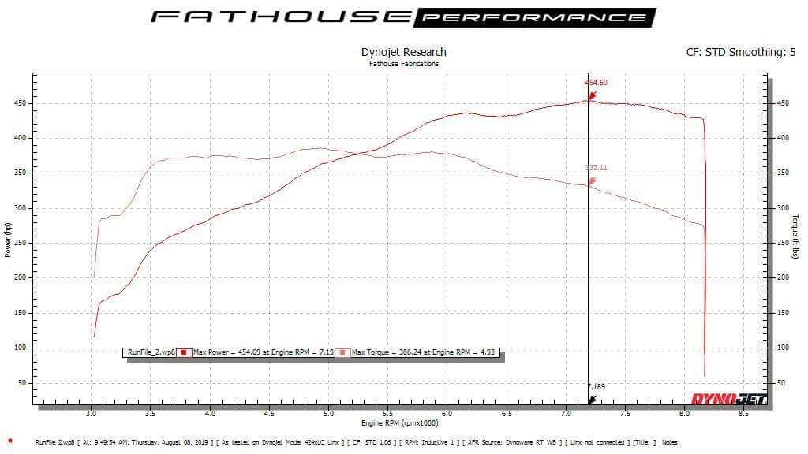 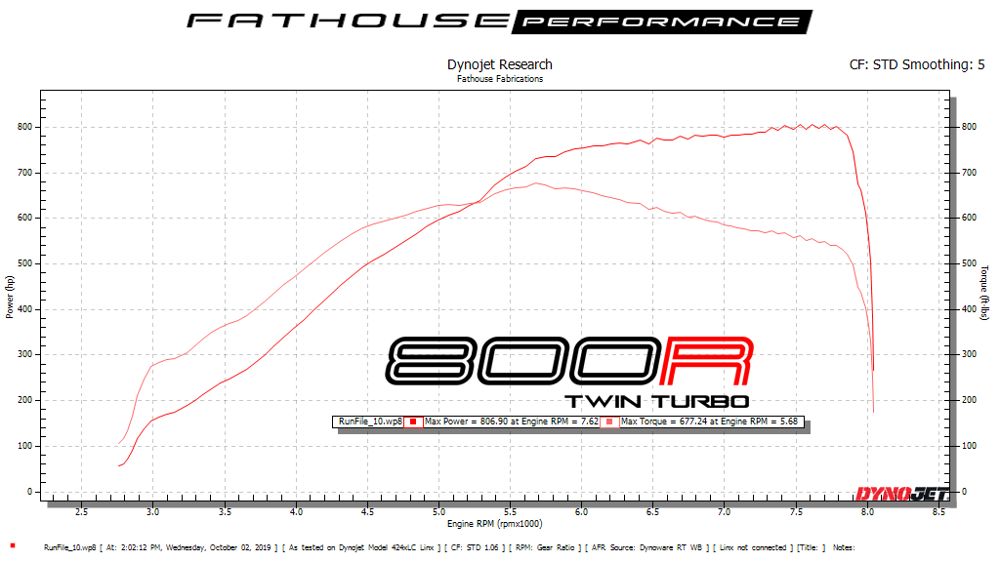With Ruby ready to take on the streets, I was ready to go and check her out to make sure everything was Ok and it was shipped back to WA.
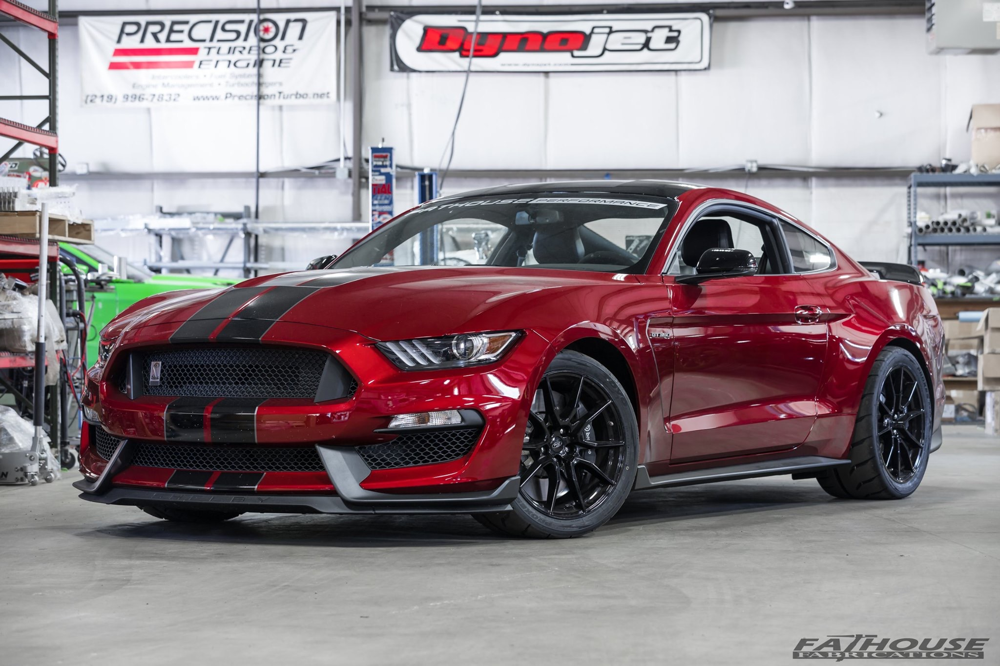 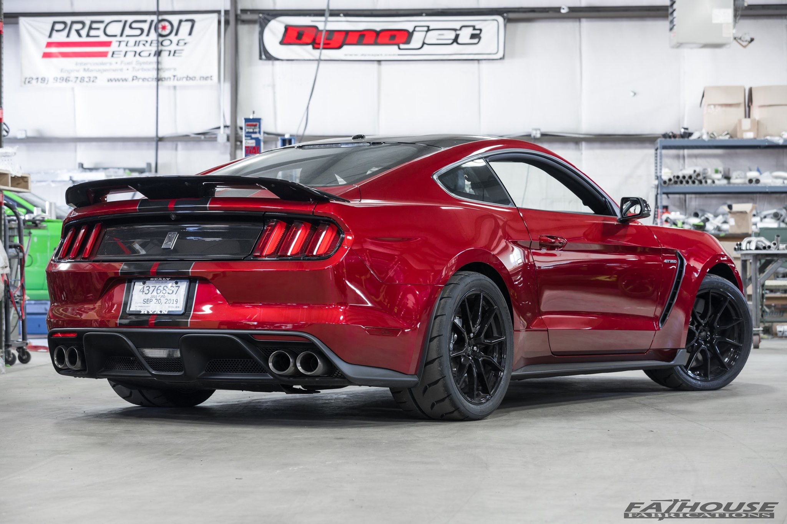On top of the 800R package, I did a few other performance and non-performance upgrades. Here is the full list below.
800R includes:
On top of that, I added:


After flying to ID and trying her out, I think I got what I wanted. She can pump your blood like a woman that makes you crazy. If you give in, she will take you from your family. You have been warned.


A few days later, the truck arrived with the monster on board.
It was time to experience the car and drive on the beautiful roads of the WA. The car had about 1,500 miles on it (1,000 of which was my road trip).
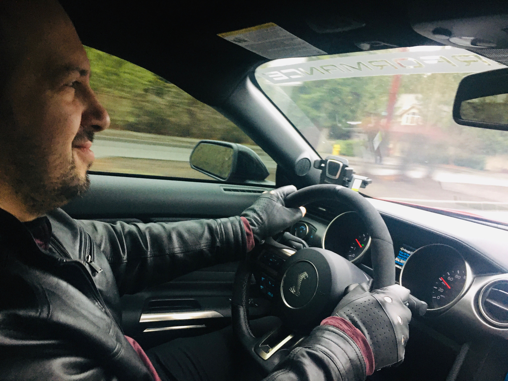 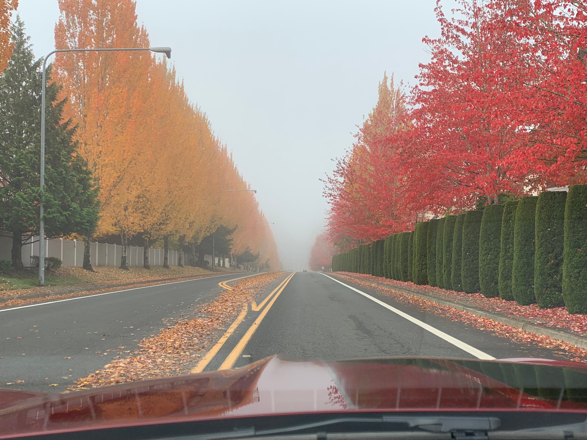 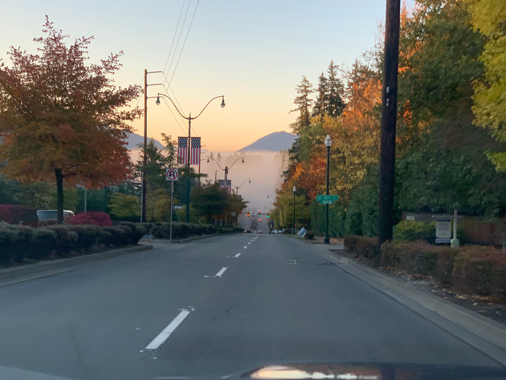
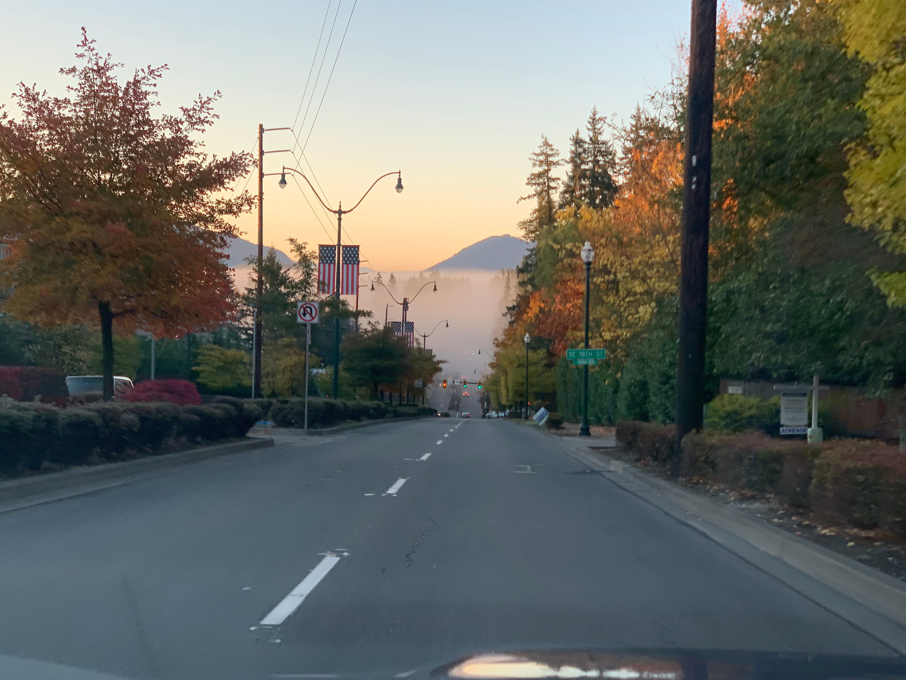
After driving 2K more miles, I was happy to observe that there were no oil consumption issues with the car, as it was with many older models. I was more careful to watch it, since the car has been modified and that could add legitimate* consumption on top of what the car had. The catch cans never had much accumulation, which was another good sign, I guess. The only time I ever added oil was at the very beginning when I added 1/2 quarts of oil, but even then I wasn't sure if the level was a tad bit below due to the car being driven for tunning while at FatFab.
As people commonly do, the first mods were to have paint protection film and ceramic coating done on the car before rock chips would take their toll on her beautiful looks. I also had tinting done and got a few logo overlays and accents to show this car is no ordinary.
The next mod that's worth mentioning is installing the plug cable for battery tender under the hood for ease of battery charge/maintenance.
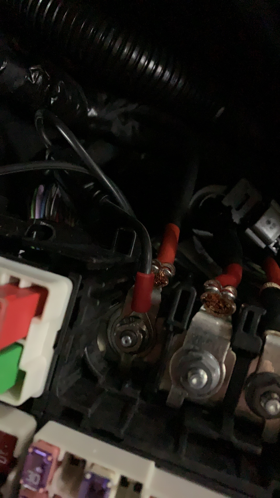 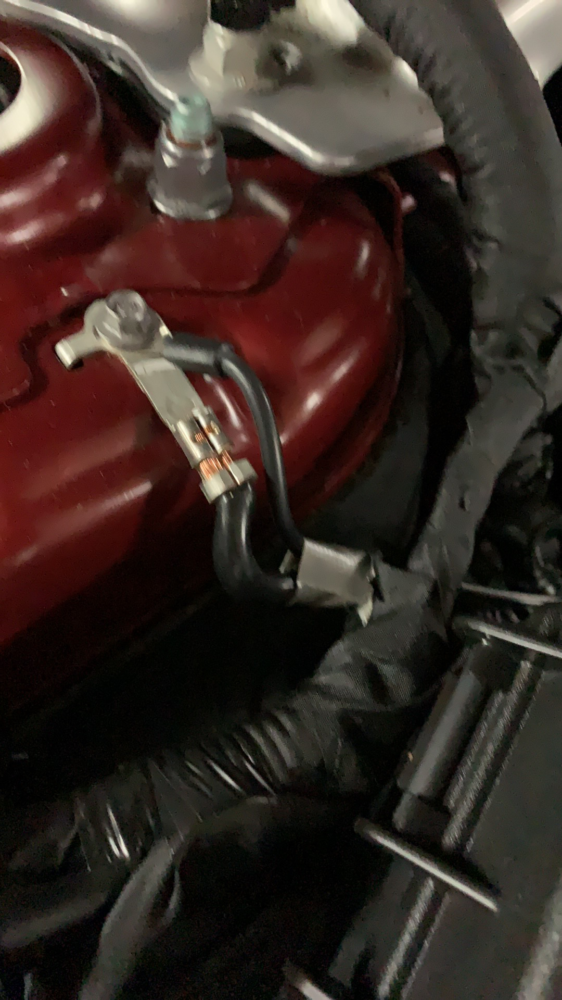Going easy on the oil cap when putting it back after adding oil? Don't, because this is what can happen:
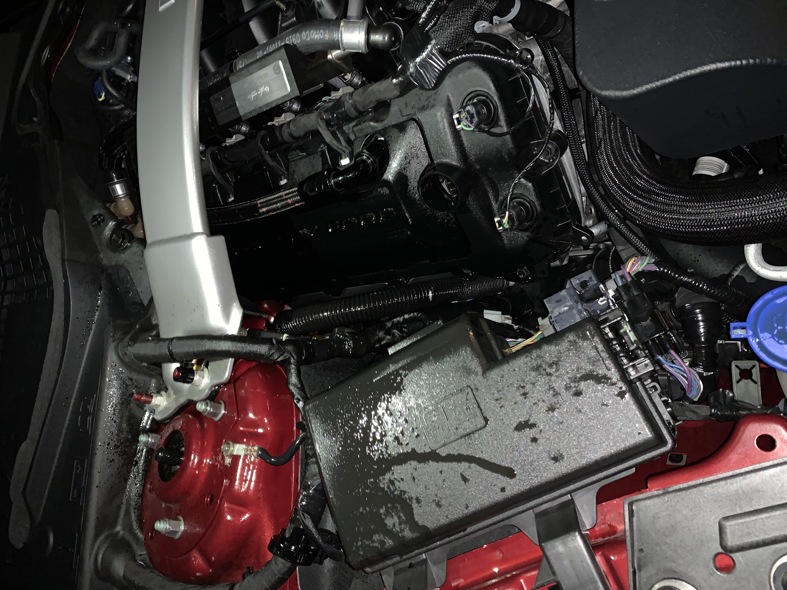Of course, I degreased and washed it all off but there were plenty of unpleasant moments while driving the car with the smell of burnt oil, not knowing what's going on. Fortunately, I got away with just adding a bit more oil and getting a new oil cap. Just give that cap a good twist folks!
The stock car felt like a muscle car. It had plenty of power. But Ruby is a freaking beast. A total transformation. You are pushing the car from 3rd to 4th and suddenly you are going 160mph. And yes, you can use all that power, even on the streets. Even getting to 60mph can be a different story now, if you want to. On the highway, it's a frequent Tesla driver tear burst generator. The sticky R888R tires give a lot of confidence when flooring or turning, so much better than stock tires and pretty much a must for a beast like Ruby. The MGW shifter is crisp and tight, I love it!
It's still a very comfortable drive, if that's how you want to drive, despite so much more power available under your toes. Perfect for opportunistic daily driving (which pretty much means if the roads are dry, drive it).
Turboing the car definitely changed how it sounds, so the characteristic sound of the flat-plane crank isn't fully there anymore, but the gap is now filled with a growl of a beast and when you are at it oh boy do those turbos sing! It feels more like an exchange rather than a loss, though I loved the sound of the NA engine. One way it transformed how I drive the car is I stopped listening to music while driving and pull the side windows down at least one inch so I hear the car better. Oh, besides, I never cared much about tunnels before...
The car gets attention for sure, especially when people notice it's modified. It's sometimes even expressed in unexpected ways like pedestrians insisting to yield the road with a big smile on their face. Not that I am seeking for attention, but it feels good to own such a car.
If there is anything in Ruby that looks/feels aftermarket is this boost controller. Besides being an add-on piece that doesn't blend well with the interior, this piece of equipment is utterly inconvenient to use. It's got many different settings that have been set as a result of the tune but can be inadvertently changed if the buttons are touched. At the same time, you can't ignore it because one of the settings controls the boost levels (1 to 4) and to adjust them (say you want to set the minimum 600whp or to 800whp), you have to navigate through the settings and find the right option and the change it. The setting names are abbreviated, so forget about figuring what they mean and what they are for (not that I cared, but still).
On one occasion I unknowingly put it in some mode that started displaying just three dashes and I couldn't get out of that mode until I contacted FatFab and got instruction. After some time, the display got completely bad and refused to take any input. That said, the controller and the turbo system were fine, since the car was running fine and building boost fine. It's just I couldn't change the boost levels anymore.
After some time driving the car, I gradually came to the determination to address this (and I did).
Why not? If the car has low clearance and you can easily break your front splitter on the curb, just have that sensor to save people from those silly accidents! Backing into parking is not a solution, because sometimes (e.g. angled parking) it's not feasible, let alone you just forget doing it because it's not natural. I got close to getting into such a sad story. Front parking sensors are probably not designed to detect if you are hitting your front splitter on the curb, but here is an idea for innovation for you, you are welcome :)
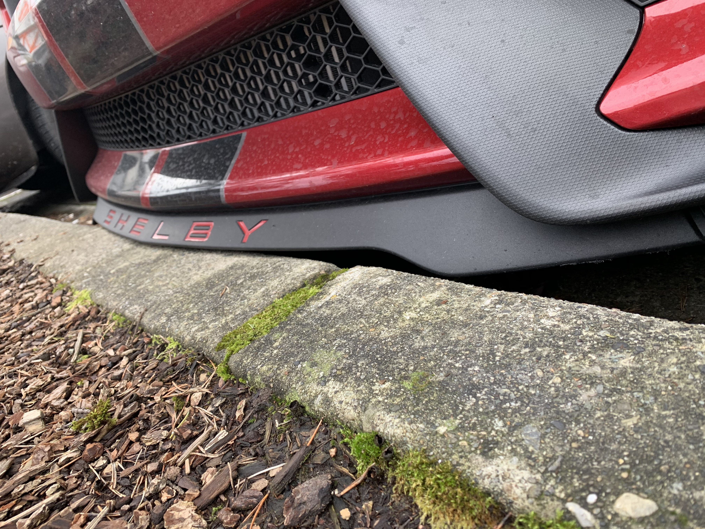One of the realizations of stepping into the world of aftermarket mods was that not only you are not paralyzed anymore by the fear of whether something is covered by warranty, you are now in a position to pinpoint various aspects of the car that if improved, will make it a better car, and you don't care what it is. It becomes a game of balancing the constant desire to evolve with financial responsibilities that refuse to disappear. Below are what came up as I was going through the new phase of my life.
It's expected to have that much power and not being able to constantly maintain the right throttle level for optimal traction with the ground. This is something your foot can't do and neither the stock traction control. Not worrying about spinning the wheels and enjoying the full power of the car regardless of what you are doing was another thing that gradually came forward and got me thinking more about getting MoTeC at some point.
One thing that wasn't brought up to me and I didn't think it would be a problem was that the stock clutch wouldn't survive for too long with the power levels I had. 1K miles through the clutch started slipping on the 5th, at higher RPM. I wasn't sure if it was because of how I was shifting, but after consistently reproducing it, it was clear that a weak spot was exposed. From an area of improvement, it became a timed necesity.
Both of the above points and another round of discussions with Ben from FatFab led me to decide to upgrade Ruby to 1000R. Not that I needed the extra power, but with that many things done on the car (MoTeC, twin disc carbon clutch), you might as well upgrade the fuel system and smell some E85 :) Remember the additive upgrade path I was referring to? This was what I ended up taking advantage of. This also would take care of the pesky boost controller problem, since MoTeC integrates with the car's system and boost levels can now be controlled through drive modes!
So there Ruby goes on another trip back to her creators, just to get better and stronger, and come back to delight again...
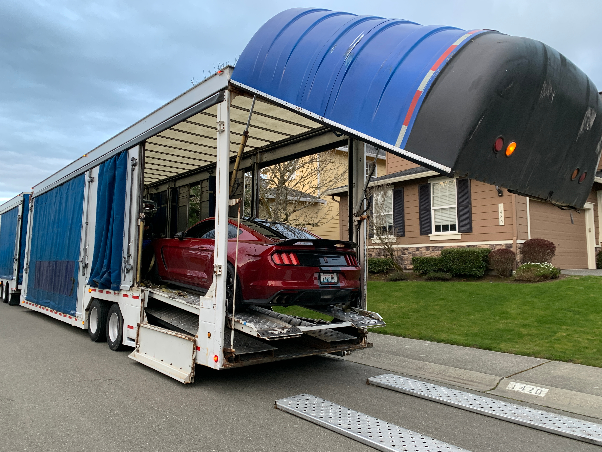